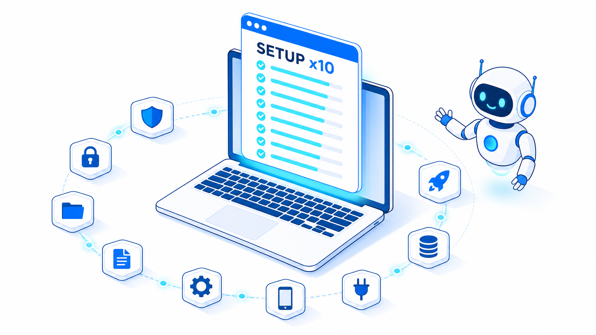
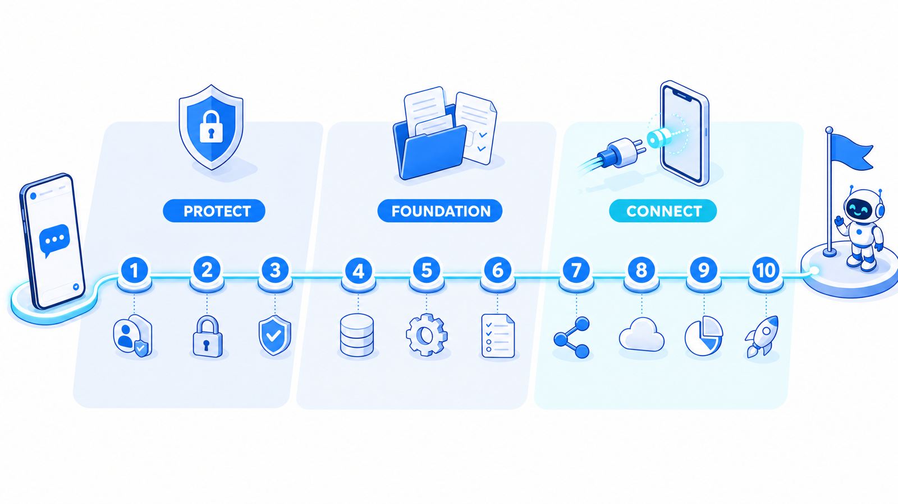
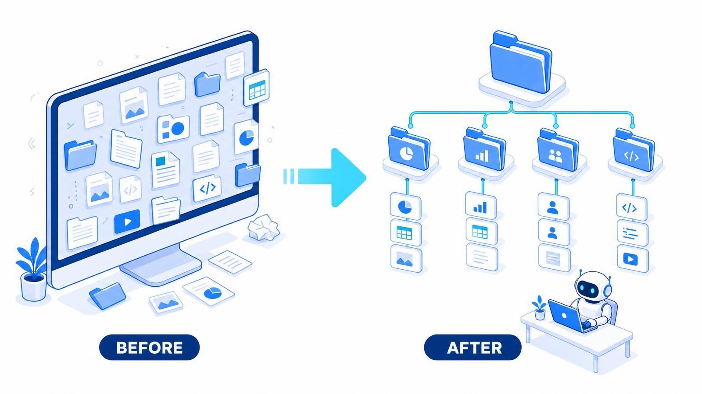
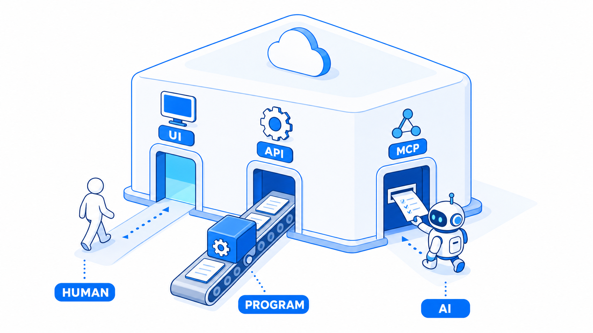

保存版資料のお受け取り、ありがとうございます。この資料では、本編でお伝えした10個の初期設定を、実際に手を動かして進めるための手順とプロンプトつきでまとめています。上から順番に進めれば、今日からプロと同じ設定でClaude Codeを使えるようになります。

HOW TO USE
前提の確認と、10個の設定の全体像です。
前提は2つだけです。全部Claudeのデスクトップアプリで完結します。ターミナル（黒い画面のコマンド入力ツール）は使いません。そして、Claudeの有料プランに入っていれば追加料金はかかりません。

途中で分からなくなったら、この資料に戻る前にまずClaude Code本人に聞いてください。「Claude CodeのことはClaude Codeに聞く」が、10個すべてに共通する合言葉です。
SETTING 01
もうインストールが終わっている方は、この章は飛ばしてください。
必ず公式サイトからダウンロードしてください。検索すると公式と何の関係もない偽サイトが出てくることがあり、そこに個人情報やカード情報を入れると流出の恐れがあります。
Claude 公式ダウンロードいつものClaudeの画面から、Claude Codeに切り替えるだけです。
デスクトップなどに新しいフォルダを1個作り、Claude Codeで開けば準備完了です。このフォルダは設定4で本格的に育てます。
（ここにエラー文をそのまま貼り付け） このエラーが出ました。原因を分かりやすく説明して、直せるところは直してください。
SETTING 02
仕事の情報を入れる前に、いちばん最初に確認する設定です。
Claudeに入れた情報は、AIの改善に使われる場合があります。そしてこの設定は最初はオンになっています。仕事で使うなら、ここを必ず確認してください。
アプリの設定画面を開きます。
設定の中にデータをAIの改善に使うかどうかの項目があるので、気になる方はオフにしておきます。
位置情報を送る設定もあるので、そこも合わせて確認しておきます。
SETTING 03
毎回出てくる「実行していいですか？」の確認を、安全にスキップします。
Claude Codeには「許可モード」が4つあります。まず全体像です。
| モード | 動き | 使いどころ |
|---|---|---|
| 許可確認 | 実行のたびに毎回確認してくる | 最初はこれ。動きに慣れるまで |
| 自動権限 | 必要な時だけAIが確認してくる | 慣れてきたら普段の作業はこれ |
| プラン | 計画だけ立てて実行はしない | 大きい作業を頼む時だけ |
| バイパス権限 | 確認を全部スキップする | リスクを分かっている人向け。今日は選ばなくてOK |
使い分けはシンプルです。まずは「許可確認」のまま使い始めて、Claude Codeの動きに慣れてきたら普段の作業は「自動権限」に切り替える。切り替えはチャット画面のモード選択からいつでもできます。「プラン」は大きい作業の前に計画だけ立てさせて、納得してから実行させると、意図とズレたものが出来上がる事故が減ります。
使っていると、許可した操作がどんどん増えていきます。月1回くらい、このプロンプトで棚卸しするのがおすすめです。
今の許可リストを教えて。整理した方がいいものがあれば提案して。
SETTING 04
10個の中でいちばん差がつく設定です。一撃構築プロンプトつき。
ローカルフォルダ（自分のパソコンの中のフォルダ）は、Claude Codeの作業場所そのものです。普通のチャットのAIと違って、Claude Codeはフォルダに入ってファイルを直接読み書きしながら働きます。だから、どんなフォルダを用意してあげるかで仕事の質が全部変わります。

自分の会社の情報・商品の情報・過去の発信が整理されて入っていると、AIの答えが一般論ではなく自分の事業に合わせたものになります。僕の場合は、事業部ごとにフォルダを分けて、会社の情報を全部この中に入れています。
本編でお約束した、フォルダ構造を一撃で作るプロンプトです。Claude Codeに貼ると、あなたの仕事内容をヒアリングした上で、AIが働きやすいフォルダ一式を作ってくれます。
あなたに、私の仕事用フォルダの設計をお願いします。 これから、このフォルダをあなた（Claude Code）の作業場所として使います。 【やってほしいこと】 1. まず、次のことを私に1つずつ質問してください。 - どんな事業・仕事をしているか（複数あれば全部） - よくやる作業（例: SNS投稿づくり、資料作成、経理、リサーチ） - すでに持っている情報・ファイルの種類（例: 過去の投稿、商品資料、お客様とのやり取り） 2. 私の回答をもとに、次の3種類の情報が分かれて収まるフォルダ構成を設計してください。 - パーソナルナレッジ: 私自身の考え方・経歴・文体など「私の情報」 - プロダクトナレッジ: 商品・サービス・お客様に関する情報 - コンテンツナレッジ: 過去の発信物・制作物・参考資料 3. 事業や部署ごとにフォルダを分けて、それぞれに「何を入れるフォルダか」を書いたREADME.md（説明書きファイル）を作ってください。 4. 最後に、今後あなたが成果物を保存する時の「保存先の判断ルール」を1枚のファイル（directory.md）にまとめてください。 【条件】 - フォルダ名は、ITに詳しくない人でも意味が分かる日本語にすること - 階層を深くしすぎないこと（3階層まで） - 分からないことは推測せず、私に質問すること
SETTING 05
同じ注意を毎回しなくてよくなるファイルです。
CLAUDE.mdは、Claudeに毎回守らせるルールを書くファイルです。1回書いておくと、Claude Codeが毎回それを守って動いてくれます。設定していないと毎回細かい修正を指示する羽目になりますが、書いておくとやり直しが激減して、AIの動きのブレが全然なくなります。
このフォルダに、あなたが毎回守るルールを書いたCLAUDE.mdを作ってください。 まずは次の3つのルールから始めます。 - すべて日本語で回答すること - （守ってほしいフォルダ名）の中は変更しないこと - ファイルを削除する時は、消さずに「_ごみ箱」フォルダに移すこと 私の仕事内容を踏まえて、他に入れておくべきルールがあれば提案してください。
SETTING 06
一度覚えさせれば、毎回説明しなくても同じ品質で動きます。
スキルは、AIに覚えさせる作業のマニュアルのようなものです。CLAUDE.mdが「毎回守る全体のルール」なのに対して、スキルは「作業ごとのマニュアル」。僕はYouTubeのリサーチやX投稿の作成など、よくやる作業を全部スキルにしています。
やり取りしながら、満足のいく内容になるまで仕上げます。
スキルクリエイター（スキルを作るためのスキル）が最初から入っているので、書き方を覚える必要はありません。
これまでのやり取りを全部参照して、このタスクをスキル化してください。
他の作業でも使えるように抽象化して。
SETTING 07
ここからの3つが、特にお伝えしたかったメイン機能です。
コネクタは、GmailやSlack、Notionなど外部のツールをClaudeにつなげる機能です。たとえばGmailをつなぐと、メールを読んで返信案を作るところまで頼めるようになります。僕の会社では、Gmailの管理はAIの仕事の1つです。
設定画面にコネクタの一覧があります。
SlackやNotion、Driveなど、仕事で使う定番のツールはだいたい並んでいます。
プログラミングは何もいりません。
直近3日で返信が必要なメールをピックアップして、返信案も作って。
このコネクタ、中身はMCP（AI専用の窓口）という仕組みで動いています。外部ツールの説明書は人間向けで辞書みたいに分厚く、AIが毎回全部読むと一度に覚えておける量が埋まってパンクしてしまいます。MCPは「これとこれができますよ」という一覧だけをAIに分かる形で短く返してくれる、AIのために整えられた窓口です。この名前は次の設定でも出てくるので、「コネクタの中身はMCP」とだけ覚えておいてください。

SETTING 08
一覧に用意されていないツールでも、接続を自分で作れます。
コネクタはClaude側があらかじめ用意したものをつなぐ機能でしたが、用意されていないツールでも自分専用の接続を作れます。僕の実例だと、会社で使っているDiscord（チャットアプリ）につないで、Discordの中にAI社員が住んでいる状態を作っています。スマホからDiscordで話しかけると家のPCのClaude Codeが動いて、仕事が終わったら向こうから報告まで送ってきます。
カスタムMCPは「接続プログラムを作る」「それをClaudeに登録する」の2段階だけです。コネクタはこの2つが最初から済んでいて、一覧から選ぶだけの状態でした。一覧にないツールはここを自分でやる——これがカスタムMCPの正体です。作る方はClaude Codeに丸投げでOKです。
AIから来る質問にチャットで答えていくだけです。設定1で言った「接続プログラム」がこのMCPにあたります。
コネクタ設定にある「カスタムコネクタを追加」から登録すれば接続完了です。登録が分からなくても、「今作ったやつをClaudeにつないで」と頼めば手順を案内してくれます。途中でAIが画面を操作して、代わりに設定してくれる場面もあります。
DiscordとつなぐMCPを作ってください。 必要な情報があれば、1つずつ質問してください。 出来上がったら、Claudeにつなぐ手順も案内してください。
SETTING 09
リサーチや投稿収集を自動化する、いちばん伸びしろのある設定です。
API（外部のサービスとやり取りするための機械用の窓口）は、YouTubeならYouTube Data API、XならX APIのように、大体のサービスに用意されています。
実はコネクタも、裏側ではこのAPIを使っています。整理すると、サービスの入り口は相手ごとに3つあります。
| 誰が | 入り口 | やり方 |
|---|---|---|
| 人間 | 画面（UI） | 画面を見てポチポチ操作する |
| プログラム | API | 機械用の窓口に、決まった形の文でお願いする |
| AI | MCP | AI専用の窓口で「何ができるか」を教えてもらってお願いする |
コネクタとカスタムMCPは「何ができるか」の一覧の中からお願いする方式で、カスタムMCPはその一覧を自作して増やす方式でした。APIは機械用の窓口に直接つなぎにいくので、どんなデータをどう取ってくるかまで全部自分で決められます。Claude Codeは自分でプログラムを書けるので、この機械用の窓口にも直接つなぎにいけます。たとえば僕はYouTubeのAPIをつないで、伸びている動画のデータを自動で集めてリサーチシートにまとめるところまで全部Claude Codeにやらせています。
発行といっても難しいことはなく、公式サイトの開発者向けページにログインして「APIキーを作成」のようなボタンを押すだけです。出てきた文字列がAPIキー。発行ページの場所は、下のAPIリストの「取得先」から飛べます。
すると「.env」という鍵の保管ファイルを作ってくれて、「ここにキーを貼ってください」と案内されます。
これだけです。あとのセットアップは全部AIがやってくれます。
（サービス名）のAPIをつなぎたいです。 1. まず、APIキーを保管するための.envファイルを作って、どこに何を貼ればいいか教えてください。 2. APIキーの発行ページの場所も案内してください。 3. 私がキーを貼り終えたら、残りの接続設定をお願いします。
本編でお約束したAPIリストです。色々検証した中で、簡単で便利かつコスパの良いものを使っています。それぞれ何ができるかと、キーの取得先（公式の開発者向けページ）を載せているので、気になったものからつないでみてください。
| API | 何ができるか | 取得先 |
|---|---|---|
| Anthropic API（Claude API） | AIアシスタント「Claude」を自分のツールや業務フローから呼び出せます。文章の作成・要約・分析などを自動で行わせることができます。 ※ 公式サイト（platform.claude.com）で無料登録後、管理画面からAPIキー（利用するための鍵）を発行。利用量に応じた従量課金です。 | 公式ページ |
| OpenAI API | ChatGPTでおなじみのGPTシリーズのAIを、自分のアプリや作業から直接使えます。文章生成のほか音声や画像の処理にも対応しています。 ※ platform.openai.comでアカウント登録し、管理画面からAPIキーを発行。使った分だけ支払う従量課金です。 | 公式ページ |
| OpenAI Images API（gpt-image系） | 文章で指示するだけでAIが画像を新しく作ったり、既存の画像を部分的に描き直したり（編集）できます。バナーやサムネイル作りに使えます。 ※ OpenAI APIと同じアカウント・APIキーで利用可。生成枚数や画質に応じた従量課金で、一部モデルは組織確認（本人確認）が必要な場合があります。 | 公式ページ |
| Gemini API（Google） | GoogleのAI「Gemini」を自分のアプリから使えます。文章だけでなく画像・音声・動画もまとめて理解させられるのが特徴です。 ※ Google AI Studio（ブラウザの管理画面）から無料でAPIキーを発行でき、無料枠あり。本格利用は従量課金です。 | 公式ページ |
| xAI API（Grok API） | X（旧Twitter）系列のxAI社が作ったAI「Grok」を呼び出せます。文章生成や画像の読み取り・画像生成に対応しています。 ※ console.x.ai でアカウント登録し、管理画面からAPIキーを発行。利用量に応じた従量課金です。 | 公式ページ |
| Groq API | 専用チップで動く「とにかく返答が速い」AI実行サービスです。Llamaなどの公開AIモデルを、体感ほぼ待ち時間なしで使えます。 ※ console.groq.com で登録し管理画面からAPIキーを発行。無料枠があり、xAIのGrokとは別会社・別サービスです。 | 公式ページ |
| fal.ai API | 画像・動画・音声などを作るAIモデル（自動生成の仕組み）を、1つの窓口からまとめて呼び出せるサービスです。1,000種類以上のモデルから選んで、プログラムから画像生成などを実行できます。 ※ fal.aiのダッシュボード（管理画面）から無料でAPIキーを発行でき、使った分だけ支払う従量課金制です。 | 公式ページ |
| X API（旧Twitter API） | X（旧Twitter）の投稿を自動で行ったり、投稿やユーザーの情報を取得したりできる仕組みです。予約投稿ツールや分析ツールの土台になっています。 ※ developer.x.comでデベロッパーアカウント（開発者登録）が必要。無料枠は投稿数などに制限があり、本格利用は有料プランです。 | 公式ページ |
| YouTube Data API v3 | YouTubeの動画・チャンネル・再生リストの情報を取得したり、動画のアップロードやタイトル変更などをプログラムから行える仕組みです。 ※ Google Cloudの管理画面でプロジェクトを作りAPIを有効化して使います。無料ですが1日あたりの利用量（クォータ）に上限があります。 | 公式ページ |
| YouTube Analytics API | 自分のYouTubeチャンネルの再生回数・視聴時間・視聴者層などの分析データ（アナリティクス）を、プログラムで取り出せる仕組みです。レポートの自動作成に使えます。 ※ 無料。自分のチャンネルのデータを見るため、Googleアカウントでの認証（OAuth＝本人許可の手続き）が必要です。 | 公式ページ |
| OmniSocials API | Instagram・X・TikTokなど最大11のSNSへの投稿・予約・分析確認を、ひとつのAPI（外部連携の窓口）からまとめて行えます。 ※ 有料サービス（月10ドル〜、14日間無料トライアルあり）で、APIキーはapp.omnisocials.comの設定画面から発行します。全プランでAPI利用可能です。 | 公式ページ |
| Threads API（Meta） | Metaが提供する、Threadsへの投稿・返信・閲覧データの取得をプログラムから行える仕組みです。予約投稿や自動投稿ツールに使われています。 ※ Meta for Developersでアプリ登録が必要。無料ですが、本番利用にはMetaの審査（技術提供者の確認）が入る場合があります。 | 公式ページ |
| Instagram Platform API（Meta） | Instagramのビジネス・クリエイターアカウント（プロアカウント）向けに、投稿の公開・コメント返信・データ取得などをプログラムから行える仕組みです。 ※ Meta for Developersでのアプリ登録とプロアカウントが必要。無料ですが、機能によってはMetaの審査（アプリレビュー）があります。 | 公式ページ |
| Meta Marketing API | FacebookやInstagramの広告を、プログラム（自動の仕組み）から出稿・管理・成果確認できます。広告キャンペーンの作成から効果測定までをまとめて自動化できます。 ※ API自体は無料ですが、Meta for Developersでのアプリ作成と有効な広告アカウントが必要で、利用範囲によっては審査（アプリレビュー）があります。 | 公式ページ |
| TikTok Research API | TikTokの公開されている動画やアカウントのデータを、研究目的で取得・分析できます。どんな投稿がどれくらい見られているかなどを調べられます。 ※ 米国・欧州の非営利大学等の学術研究者向けで、申請と審査が必要です（一般の事業者は原則利用できません。回答まで約4週間）。 | 公式ページ |
| Typefully API | X（旧Twitter）やLinkedIn、Threadsなどへの投稿の下書き作成・予約投稿・公開を、外部のツールから自動で行えます。 ※ Typefullyの管理画面（Settings → API）からAPIキー（合言葉のような認証コード）を発行して使います。2025年12月に新版のv2が公開されています。 | 公式ページ |
| Metricool API | InstagramやX、TikTokなど複数SNSへの予約投稿や、分析データの取り出しを外部から自動で行えます。 ※ 上位プラン（Advanced／Custom）限定の機能で、管理画面のAccount Settings → APIから発行します。 | 公式ページ |
| SocialData API | X（旧Twitter）の投稿・プロフィール・フォロワーなどの公開データを、公式の高額なAPIを使わずに取得できる外部サービスです。 ※ 月額制ではなく、事前チャージした残高から使った分だけ支払う従量課金です（残高の有効期限なし）。X社の公式APIではない点に注意が必要です。 | 公式ページ |
| SociaVault API | InstagramやTikTok、YouTubeなど25以上のSNSから、公開されている投稿やプロフィールのデータをまとめて取得できるサービスです。フォロワー数の推移チェックや投稿の分析に使えます。 ※ サイトから無料登録するとお試し用のクレジット（利用枠）がもらえ、クレジットカードなしで試せます。本格利用は有料のクレジット購入制です。 | 公式ページ |
| Perplexity API | AI検索サービスPerplexityの仕組みを自分のツールから使えるAPI（外部から機能を呼び出す窓口）です。最新のWeb情報をもとに、出典つきの回答文や検索結果を返してくれます。 ※ Perplexityのサイト内のAPIポータル（管理画面）でAPIキーを発行して使う、使った分だけ支払う有料制です。 | 公式ページ |
| Firecrawl API | 指定したWebサイトの中身を読み取り、AIが扱いやすいきれいな文章データに変換してくれるサービスです。サイト全体を巡回してまとめて取り込むこともできます。 ※ 公式サイトで無料登録するとAPIキーが発行され、無料枠つき・使用量に応じた有料プランがあります。 | 公式ページ |
| Apify API | Webサイトやアプリからデータを集める「Actor（アクター）」と呼ばれる既製の収集プログラムを、外部から動かしたり結果を受け取ったりできるサービスです。何千種類もの既製ツールを選んで使えます。 ※ 無料登録で管理画面（Console）からAPIトークンを発行。無料枠あり、超過分は従量課金です。 | 公式ページ |
| Bright Data API | 大規模なWebデータ収集の専門サービスで、ブロックされにくい仕組みを使ってWebページや検索結果、SNSなどの公開データを取得できます。企業向けの本格的なデータ収集基盤です。 ※ アカウント登録後に管理画面からAPIキーを発行する有料サービスで、法人利用が中心。利用目的の確認（審査）が入る場合があります。 | 公式ページ |
| ScrapeCreators API | TikTok・Instagram・YouTubeなど36以上のSNSから、公開されているプロフィールや投稿・動画のデータを取得できるサービスです。クリエイターやインフルエンサーの調査に向いています。 ※ 公式アプリ（app.scrapecreators.com）で無料登録するとAPIキーが発行され、無料お試し枠つきの従量課金制です。 | 公式ページ |
| PLAUD 開発者プラットフォーム（Plaud Dev API） | PLAUDの録音データから作られた文字起こしや要約を、自分のシステムやアプリに取り込めます。会話の記録を他のツール（顧客管理など）に自動で流し込む使い方ができます。 ※ 主に企業向けで、dev.plaud.ai からの利用申請（審査）が必要です。個人が自分の録音データをAIに読ませたいだけなら、公式のMCP連携（外部AIとつなぐ仕組み）が案内されています。 | 公式ページ |
| Zoom API | Zoomのミーティング作成・参加者情報・録画データなどをプログラムから取り扱えます。会議の予約や録画の取得を自動化できます。 ※ Zoom App Marketplaceで無料でアプリを作成し、認証情報（APIを使うための鍵）を発行して利用します。Zoomアカウントがあれば始められます。 | 公式ページ |
| MindMeister API | MindMeisterで作ったマインドマップ（考えを枝分かれで整理した図）のデータを、外部のプログラムから読み書きできます。 ※ OAuth 2.0（アカウント連携の認証方式）でのアプリ登録のほか、登録なしで使えるパーソナルアクセストークン（自分専用の鍵）の発行にも対応しています。 | 公式ページ |
| Loom SDK / Loom API | 画面録画ツールLoomの録画・埋め込み機能を、自分のサービスやアプリの中に組み込めます。録画した動画の管理も行えます。 ※ 開発者向けページから無料で始められるとされています（プランによる制限の詳細は公式ページで要確認）。 | 公式ページ |
| UTAGE API・MCP連携 | UTAGEのファネル（販売ページの流れ）やページの作成・編集、メール・LINE配信の管理をプログラムやAIツールから操作できます。ZapierなどとつないだWeb作業の自動化にも使えます。 ※ 2026年4月に公開された新しい機能で、UTAGE管理画面右上の「API設定」からAPIキーを発行して使います。詳細ドキュメントは docs.utage-system.com にあります。 | 公式ページ |
| freee API | 会計ソフトfreeeの取引データ・請求書・経費などをプログラムから登録・取得できます。売上データの自動記帳や他ツールとの連携に使えます。 ※ freeeアカウントがあれば無料でアプリ登録してAPIを使えます。開発用のテスト事業所も無料で作成できます。 | 公式ページ |
| LINE Messaging API | LINE公式アカウントから、友だち登録してくれた人へ自動でメッセージを送ったり、返信したりできます。予約リマインドやお知らせ配信の自動化に使えます。 ※ 無料で始められます。LINE公式アカウントを作り、LINE Developersの管理画面からチャネル（接続用の窓口）を作成して利用します。月の無料メッセージ数を超える送信は有料です。 | 公式ページ |
| Chatwork API | ChatworkのチャットルームへプログラムからメッセージやタスクLを送れます。日報の自動投稿や、他ツールからの通知の集約などに使えます。 ※ Chatworkの利用者本人が管理画面（サービス連携設定）からAPIトークン（合言葉のような鍵）を発行して使います。 | 公式ページ |
| Discord API（Bot開発） | Discordのサーバー内で動くBot（自動応答ロボット）を作れます。メッセージの自動投稿、質問への自動返信、メンバー管理などができます。 ※ 無料です。Discord Developer Portal（開発者向け管理画面）でアプリケーションを作成し、Botのトークンを発行して使います。 | 公式ページ |
| Slack API | Slackのチャンネルへ自動でメッセージを送ったり、ワークフロー（決まった作業の流れ）を組んだりできます。売上通知や外部ツールとの連携によく使われます。 ※ 無料で利用可能です。api.slack.com の管理画面でアプリを作成し、ワークスペースにインストールしてトークンを取得します。 | 公式ページ |
| Notion API | Notionのページやデータベース（表形式の管理台帳）を外部から読み書きできます。顧客リストへの自動追記や、他ツールとのデータ連携ができます。 ※ 無料です。Notionの設定画面からインテグレーション（連携用の窓口）を作成してシークレットキーを発行し、対象ページに接続許可を与えて使います。 | 公式ページ |
| Trello API | Trelloのボードやカード（付箋のようなタスク札）を外部から作成・移動・更新できます。タスクの自動登録や進捗の自動整理に使えます。 ※ 無料で使えます。取得にはまずPower-Up（Trelloの拡張機能）を管理画面で作成し、それに紐づくAPIキーとトークンを発行する手順が必要です。 | 公式ページ |
| Google Docs API | Googleドキュメント（Googleの文書作成サービス）の文書を、プログラム（自動処理）から作ったり、文章を書き込んだり書き換えたりできます。定型文書の自動作成などに使えます。 ※ API自体は無料。Google Cloudの管理画面（コンソール）でAPIを有効化し、認証情報を発行して使います。 | 公式ページ |
| Google Sheets API | Googleスプレッドシート（表計算サービス）のデータを自動で読み書きできます。売上の記録を自動でシートに書き込む、といった使い方ができます。 ※ API自体は無料。Google Cloudの管理画面でAPIを有効化し、認証情報を発行して使います。 | 公式ページ |
| Google Slides API | Googleスライド（プレゼン資料作成サービス）のスライドを自動で作成・編集できます。ひな形から資料を量産する、といった使い方ができます。 ※ API自体は無料。Google Cloudの管理画面でAPIを有効化し、認証情報を発行して使います。 | 公式ページ |
| Google Drive API | Googleドライブ（オンラインのファイル置き場）のファイルを自動で保存・検索・共有設定できます。作った資料を自動でフォルダに入れる、といった使い方ができます。 ※ API自体は無料。Google Cloudの管理画面でAPIを有効化し、認証情報を発行して使います。 | 公式ページ |
| Google Calendar API | Googleカレンダーの予定を自動で登録・変更・取得できます。予約が入ったら自動でカレンダーに予定を入れる、といった使い方ができます。 ※ API自体は無料。Google Cloudの管理画面でAPIを有効化し、認証情報を発行して使います。 | 公式ページ |
| Gmail API | Gmailのメールを自動で読み取ったり、送信したり、ラベル（メールの仕分け札）で整理したりできます。届いたメールの自動仕分けなどに使えます。 ※ API自体は無料。Google Cloudの管理画面でAPIを有効化し、認証情報を発行して使います。人のメールデータを扱うアプリを一般公開する場合は審査が必要になることがあります。 | 公式ページ |
| Together AI API | オープンソースのAIモデル（無料公開されているAIの頭脳）をインターネット経由で呼び出して、文章生成や画像生成などに使えるサービスです。ChatGPTのAPIと同じ形式で使えるので、乗り換えや併用がしやすいです。 ※ 無料でアカウント登録すると管理画面からAPIキーを発行できます。利用量に応じた従量課金制（使った分だけ支払い）です。 | 公式ページ |
| DeepInfra API | さまざまなAIモデルを低価格で呼び出せるサービスです。文章生成のほか、画像生成や音声の文字起こし（録音をテキストに変換）などもAPI（プログラムからの呼び出し口）で使えます。 ※ 無料登録後に管理画面からAPIキーを発行できる従量課金制（使った分だけ支払い）です。GitHubやGoogleアカウントでログインできます。 | 公式ページ |
| Cloudflare API | Webサイトの高速化・セキュリティサービスであるCloudflareの各種設定（ドメイン管理、キャッシュ削除、ファイル保管など）を、画面を開かずにプログラムから操作できます。 ※ 無料プランでも利用可能で、ダッシュボード（管理画面）の「My Profile > API Tokens」からAPIトークンを発行して使います。 | 公式ページ |
SETTING 10
スマホから、自宅のPCのClaude Codeを操作できるようにします。
スマホからPCのClaude Codeにつなぐ方法は、いくつかあります。まず全体像です。
| 方法 | やり方 | 向いている人 |
|---|---|---|
| デスクトップアプリの設定でオンにする | 設定を1つオンにするだけ。ターミナル不要 | おすすめ。この資料の読者はこれでOK |
| ターミナルから起動する | claude remote-control を実行して、表示されるQRコードをスマホで読み取る | ターミナルに慣れている人 |
| クラウドセッション（Anthropicのサーバー上で動くClaude Code） | スマホの「Code」タブから直接使う。PCの電源と無関係に動く | PCの電源を切る日。ただしPCの中のファイルは触れません |
App Store / Google Playの公式アプリです。PCとスマホが同じアカウントであることが条件です。
設定のClaude Codeの項目に「Enable remote control by default（リモートコントロールを既定でオン）」があるので、これをオンにします。以後のセッションが自動でスマホから見えるようになります。
PCで動いているセッションが、パソコンのアイコン＋緑の点つきで一覧に出てきます。タップすれば接続完了。そのままスマホから指示が出せます。
一度つなげば、PC側を閉じるまで接続が可能です。PCがスリープすると一時的に応答しなくなりますが、復帰すれば自動で再接続されます。PC・ターミナル・スマホのどこから送っても同じ会話に反映されます。
僕は移動中に「今日のYouTube撮影の台本送ってくれない？」とスマホから送ったりしています。家に着く頃には仕事が終わっている——外出先で成果物を確認して、そのまま納品まで終わることもできてしまいます。
（作業名）の続きを進めておいてください。 終わったら、成果物をこのチャットに送ってください。
この資料の10個で、あなたのClaude Codeはプロと同じ土台になりました。さらに深く学びたい方へ、公式LINEから参加できる「AI×SNS攻略 月額0円コミュニティ」（LINEオープンチャット）をご用意しています。追加12大特典に加えて、最新のAI×マーケティング情報を僕がキャッチアップして配信しています。
コミュニティでは、累計3,000名以上が参加した『AI駆動型コンテンツビジネス 0→100完全攻略セミナー』にも完全無料でご招待しています。参加で豪華20大特典がもらえてしまうので、ぜひこちらもご活用ください。
※ オープンチャットへの参加案内は、公式LINEのトークに届きます。
星川ユウヤ